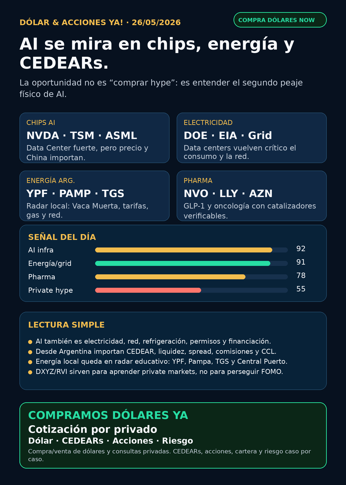

Simulación Uno Finanzas · Newsletter WhatsApp · 26 mayo 2026
Dólar & Acciones YA!
AI ya no paga solo chips: también paga electricidad, red, data centers y capital. Versión Argentina: CEDEARs, MEP/CCL, liquidez, spread y riesgo antes que impulso.
DÓLAR · CEDEARs · ACCIONES · RIESGOServicio privado por mensaje. Cotización de dólar sujeta a confirmación al operar.

Escuchalo en 2 minutos
Audio descriptivo de Lola
Resumen hablado para WhatsApp: tesis, señales, riesgos y qué mirar desde Argentina.
Links útiles
## Lectura simple del día
La lectura fuerte de hoy es que la inteligencia artificial dejó de ser una historia de un solo ticker. NVIDIA sigue siendo el corazón visible del trade, pero la plata grande también se está yendo a data centers, electricidad, red, memoria, foundries, financiamiento y permisos.
Para una persona en Argentina, eso se traduce así: no alcanza con decir “me gusta Nvidia” o “me gusta energía”. Hay que mirar el instrumento concreto —CEDEAR, ADR, acción local, ETF, fondo o bono—, la liquidez, el spread, el CCL implícito, comisiones, horizonte y cuánto riesgo de cartera estás dispuesto a tomar.
En criollo: buena empresa no siempre es buena inversión al precio actual; buen activo global no siempre es buen instrumento local; y estar “en radar” no significa comprar.
## Tesis central
AI está entrando en la etapa de infraestructura física. La primera capa fue chips. La segunda es electricidad: generación, transmisión, backup power, cooling y data centers. La tercera es capital: deuda, leases, emisiones, buybacks, dilución y fondos cerrados que prometen exposición a empresas privadas.
El radar de hoy queda ordenado por valor educativo y calidad de evidencia, no como recomendación de compra.
## Señales educativas de hoy — orden de radar, no orden de compra
### 1) NVIDIA / NVDA — el motor sigue fuerte, pero el precio importa
NVIDIA reportó Q1 FY2027 con ingresos de USD 81.6B, +85% interanual, Data Center de USD 75.2B, +92% interanual, autorización adicional de recompra por USD 80B y outlook de Q2 de USD 91B +/-2%, sin asumir ingresos de Data Center compute de China.
- Estado: señal fortalecida para AI infra.
- Riesgo: valuación, expectativas altísimas, China, concentración y energía/data centers.
- Fuente primaria: https://www.sec.gov/Archives/edgar/data/1045810/000104581026000051/q1fy27pr.htm
- Argentina: mirar CEDEAR/ratio/liquidez/spread antes de cualquier decisión humana.
### 2) Electricidad y data centers — el segundo peaje de AI
DOE indica que la demanda eléctrica total de EE.UU. podría crecer 15–20% en la próxima década y que los data centers podrían llegar a consumir hasta 9% de la generación anual de EE.UU. en 2030, contra 4% de carga total en 2023. EIA también proyecta que servidores de data centers en edificios comerciales podrían llegar a 446–818 BkWh para 2050, con servidores pasando de 7% del consumo eléctrico comercial en 2025 a 22–33% según escenario.
- Estado: tesis estructural fortalecida.
- Riesgo: permisos, transmisión, costos, congestión de red, regulación y timing.
- Fuentes primarias: https://www.energy.gov/oe/clean-energy-resources-meet-data-center-electricity-demand y https://www.eia.gov/todayinenergy/detail.php?id=67704
- En criollo: AI no vive en la nube; vive en edificios que consumen electricidad real.
### 3) Utilities/grid — NextEra y Dominion como señal de escala
NextEra/Dominion describieron una combinación como respuesta al crecimiento de demanda: “America needs more power than any one company can deliver alone”. El transcript menciona large-load customers y construcción de data centers.
- Estado: señal sectorial fortalecida; no implica compra automática de NEE/D.
- Riesgo: aprobación regulatoria, deuda, tarifas, ejecución y sensibilidad política.
- Fuente primaria: https://www.sec.gov/Archives/edgar/data/753308/000110465926064528/tm2614888d8_425.htm
- Lectura: si AI necesita tanta energía que empuja consolidación utility, energía/grid merece radar propio.
### 4) Alphabet / GOOGL — AI capex también se financia con deuda y leases
Alphabet emitió notes en yenes por ¥576.5B y reveló leases principalmente vinculados a data centers todavía no iniciados con pagos futuros de USD 75.6B al 31/03/2026.
- Estado: señal fortalecida para capex AI/hyperscalers.
- Riesgo: retorno sobre inversión, márgenes cloud, competencia y timing de monetización.
- Fuente primaria: https://www.sec.gov/Archives/edgar/data/1652044/000119312526228923/d137872d424b5.htm
- Argentina: GOOGL puede mirarse como CEDEAR, pero la decisión depende de precio, CCL y cartera.
### 5) Energía Argentina — YPF y proxies locales quedan en radar educativo
YPF informó vía SEC 6-K la transferencia del 100% de la concesión convencional Manantiales Behr y transporte asociado a Pecom 51% y San Benito Upstream 49%. La lectura educativa: YPF sigue optimizando portfolio y soltando activos convencionales para concentrar capital.
- Estado: radar local educativo.
- Riesgo: precio, riesgo país, regulación, deuda, petróleo/gas y timing político.
- Fuente primaria: https://www.sec.gov/Archives/edgar/data/904851/000155485526001098/MainDocument.htm
- Argentina: YPF, Pampa Energía, TGS, Central Puerto, Edenor y Transener quedan en seguimiento por energía/grid. No se elevan a “compra” sin precio, liquidez y caso personal.
### 6) Pharma / salud — GLP-1 y oncología siguen con catalizadores reales
Novo Nordisk tuvo dos señales regulatorias vía 6-K: CHMP recomendó Wegovy oral / oral semaglutide para UE, con mean weight loss de 16.6%, y también Wegovy 7.2 mg single-dose pen, con STEP UP mostrando 20.7% mean weight loss y alrededor de un tercio alcanzando 25% o más. FDA, por otro lado, publicó warning letter sobre semaglutide/API y problemas CGMP/relabeling/repackaging. AstraZeneca informó aprobación FDA de Enhertu para dos indicaciones en cáncer de mama temprano HER2+.
- Estado: salud/pharma sigue en radar real, no solo AI.
- Riesgo: aprobación final, tolerabilidad, precio, supply, patentes, competencia y regulación.
- Fuentes primarias: https://www.sec.gov/Archives/edgar/data/353278/000117184326003634/f6k_052226.htm ; https://www.sec.gov/Archives/edgar/data/353278/000117184326003645/f6k_052226.htm ; https://www.fda.gov/inspections-compliance-enforcement-and-criminal-investigations/warning-letters/harbin-jixianglong-biotech-co-ltd-723330-05012026 ; https://www.sec.gov/Archives/edgar/data/901832/000165495426005038/a6159e.htm
- En criollo: GLP-1 no es magia bursátil; es ciencia, regulación, supply y competencia.
### 7) Space / RKLB — contrato fuerte, pero ojo con dilución
Rocket Lab obtuvo contrato de USD 90M de U.S. Space Force Space Systems Command para dos satélites GEO con payload Heimdall. En paralelo, registró un programa at-the-market/forward de hasta USD 3.000M en acciones comunes.
- Estado: señal fortalecida para RKLB como space systems/defensa; vigilar dilución.
- Riesgo: ejecución, márgenes, cash burn, competencia, financiamiento y volatilidad.
- Fuentes primarias: https://www.globenewswire.com/news-release/2026/05/22/3299858/0/en/rocket-lab-awarded-90m-contract-to-build-geo-satellites-hosting-space-domain-awareness-payload-for-u-s-space-force.html y https://www.sec.gov/Archives/edgar/data/1819994/000181999426000044/rocketlabcorporation-424b5.htm
- Importante: SpaceX IPO/SPCX apareció como ruido de titulares, pero no hay S-1/listing oficial verificado. No lo publico como hecho.
### 8) Private markets — DXYZ y RVI son para aprender, no para FOMO
DXYZ informó NAV USD 24.56 al 31/03/2026, portfolio aproximado de USD 742.5M y exposición a Anthropic, SpaceX vía SPVs, OpenAI y money market. Yahoo marcó cierre de USD 66.64 el 22/05, aproximadamente 171% sobre NAV reportado. RVI es Robinhood Ventures Fund I; un 13G muestra Robinhood Markets con 52.18% al 31/03/2026, pero holdings/NAV actuales no quedaron verificados en esta corrida.
- Estado: radar educativo / hype alto.
- Riesgo: premium vs NAV, liquidez, SPVs, concentración, falta de transparencia y acceso desde Argentina.
- Fuentes primarias: https://www.sec.gov/Archives/edgar/data/1843974/000157587226000288/dxyz100_424b3.htm y https://www.sec.gov/Archives/edgar/data/2085091/000095010326007332/xslSCHEDULE_13G_X02/primary_doc.xml
- En criollo: fondo cerrado con private tech no es lo mismo que comprar SpaceX directo.
## Watchlist base — seguimiento rápido
- **NVDA:** señal fortalecida por resultados y Data Center; riesgo China/valuación.
- **RKLB:** contrato USD 90M fortalece space systems; ATM de USD 3B obliga mirar dilución.
- **GOOGL/GOOG:** leases/capex de data centers muestran escala física de AI; CEDEAR en radar.
- **TSM / ASML / MU:** moat estructural de foundry, litografía y memoria/HBM; sin catalizador primario superior hoy en este corte.
- **PLTR:** software operativo AI en radar; no hubo señal primaria más fuerte que energía/NVDA/RKLB.
- **AAPL:** ecosistema fuerte; no elevar como AI moat sin evidencia nueva.
- **HOOD:** vigilar por relación con RVI, pero no confundir HOOD operating company con RVI fondo cerrado.
- **TSLA:** autonomía/robotaxi/energy en radar; sin fuente primaria suficiente hoy para titular.
- **Gold / GLD / GOLD / B:** SEC mapea B = Barrick Mining Corp, GLD = SPDR Gold Trust, GOLD = Gold.com Inc. Resolver instrumento exacto antes de hablar de oro.
- **RVI:** fondo cerrado/private markets; no accionable públicamente hasta tener NAV/holdings/volumen/acceso.
## Autonomy / physical AI
Waymo queda dentro de Alphabet como distribución/autonomía; Tesla mezcla autos, energía, robotaxi y robotics; Uber puede capturar o perder distribución según quién domine la red de viajes; Amazon/Zoox y Joby siguen como watchlist regulatorio y de mundo físico. Hoy no hubo señal primaria más fuerte que AI infra, energía, pharma y RKLB para titular.
## Capa Argentina: cómo usar esto sin confundirse
- **CEDEAR:** instrumento local para exponerte a empresas de afuera. Tiene ratio, liquidez, spread, comisiones y CCL implícito.
- **MEP/CCL:** referencias de dólar financiero; pueden mover tu resultado aunque la acción afuera no cambie.
- **Spread:** diferencia entre precio de compra y venta. Si es grande, entrar y salir sale caro.
- **Moat:** ventaja difícil de copiar. En AI puede ser chip, software, energía, datos, escala o regulación.
- **Capex:** plata enorme que una empresa invierte para construir infraestructura.
- **GLP-1:** tratamientos metabólicos/obesidad; mercado gigante, pero regulado y competitivo.
- **Fondo cerrado / ETF:** no son lo mismo. Fondo cerrado puede cotizar con premio/descuento contra NAV y tener liquidez limitada.
Si el feed automático de dólar no está fresco, no conviene publicar número como si fuera cotización oficial del momento. La cotización operativa se confirma por privado al operar.
## Red flags / hype para ignorar
- “AI sube todo”: falso. Hay ganadores, cuellos de botella y precios caros.
- “SpaceX IPO/SPCX ya es hecho”: no verificado con S-1/SEC directo.
- “DXYZ/RVI = comprar SpaceX/OpenAI”: falso o incompleto; son vehículos con estructura, premium, NAV y liquidez.
- “GLP-1 es compra segura”: no. Depende de ensayos, aprobación, supply, pricing y competencia.
- “Energía argentina es obvia”: no. Puede tener negocio real y riesgo país/regulatorio fuerte.
- “CEDEAR = acción afuera”: no exactamente; hay CCL, ratio, liquidez, spread y comisiones.
## Qué mirar después
1. NVIDIA: capacidad, energía, supply, China y márgenes.
2. DOE/EIA/utilities: si el estrés de red se convierte en más inversión o más restricción.
3. Energía local: YPF/Pampa/TGS/Central Puerto con fuente primaria, precio y liquidez.
4. Novo/Lilly/AstraZeneca/Merck: aprobación, tolerabilidad, supply y M&A/pipeline.
5. RKLB: nuevos contratos, márgenes y financiación/dilución.
6. DXYZ/RVI: NAV actualizado, premium/descuento, volumen, holdings y acceso real.
## Servicio privado
Si querés comprar o vender dólares, mirar CEDEARs, acciones o armar una estrategia financiera con riesgo, monto y horizonte claros, escribime por privado y lo vemos caso por caso. Cotización de dólar sujeta a confirmación al momento de operar.
Este reporte gratuito es informativo y educativo. No es asesoramiento financiero personalizado, no es recomendación de compra/venta y no promete resultados.
Compra/venta de dólares y consulta privada
Si querés comprar o vender dólares, mirar CEDEARs, acciones o ordenar una estrategia financiera personal, escribime por privado y lo vemos caso por caso.
Reporte gratuito informativo. No es asesoramiento financiero personalizado ni promesa de resultado.